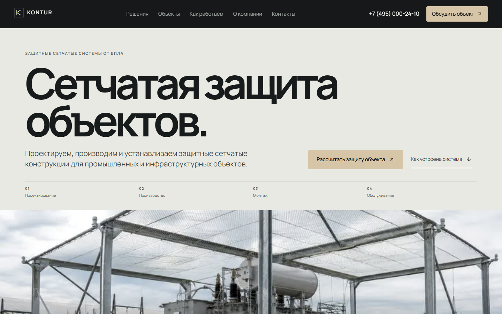
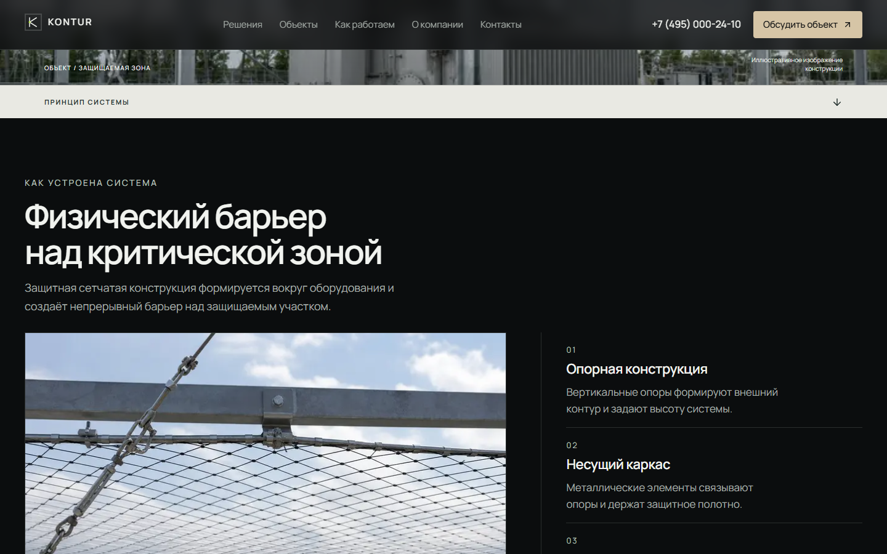
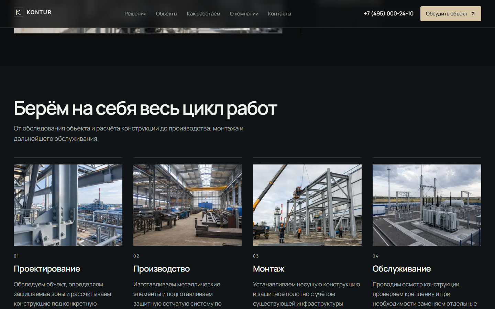
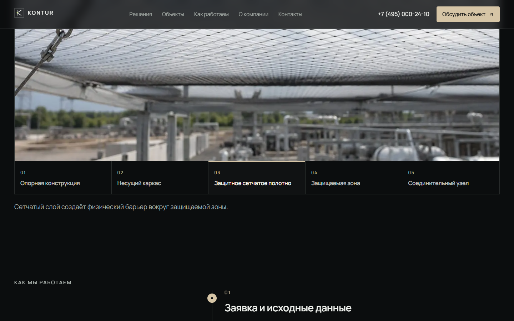
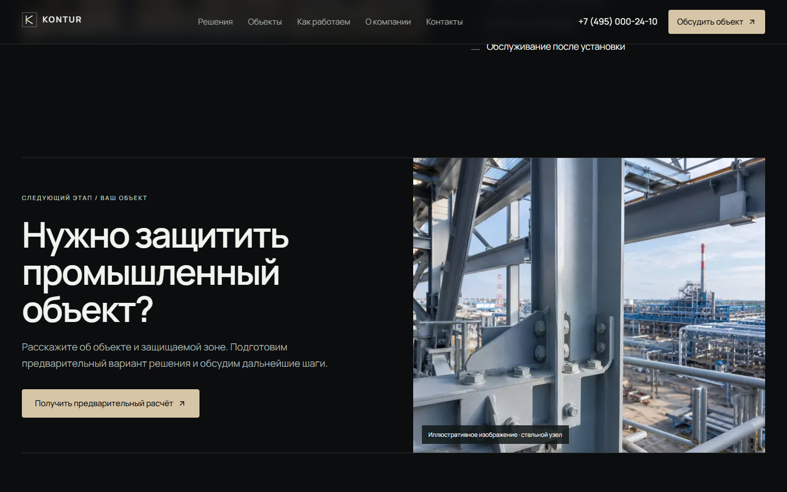

NIKITA SOLONUKHA / CASEВсе проекты ↗
KONTUR
Сетчатые системы для защиты промышленных объектов. В кейсе — полный сайт: принцип работы, решения, отрасли, состав конструкции и путь до демонстрационной заявки.

Desktop walkthrough
Mobile walkthrough
От объекта к детали.




Изображения объектов и стальных узлов — иллюстративный материал, не доказательство реально построенных сооружений. Контактная форма локально показывает результат и не отправляет заявку. Факты, ограничения и исходник · Сравнение трёх композиций.